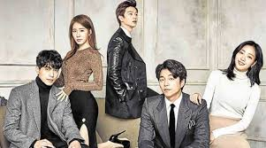
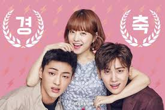
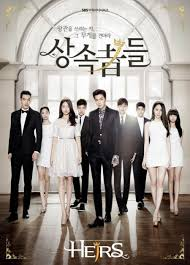
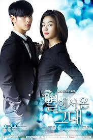
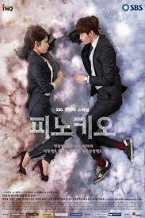

Are you addicted to Korean dramas? This list will help you increase your addiction! This top 15 list includes some of the best Korean dramas according to viewership ratings and their overall popularity. You can also watch trailers for some of the series here and vote in the poll for your favorite!
|  |
Goblin: the Lonely and Great GodIf you like fantasy romances with stories that span centuries, you should give this one a try. Goblin is an interesting ride with a fresh and unique story told beautifully throughout every episode. The drama is also visually stunning. Goblin is a fantasy drama about a modern-day goblin, protector of souls. He needs a human bride to end his cursed immortal life. However, when the goblin finds his bride, he realizes that he doesn´t want his life to end. Goblin made me laugh and cry. I was blown away by its epic love story, spectacular bromance and romance, as well as mystery and suspense! The unique premise blended together with the mystery of the characters and unexpectedness of the drama. |
|  |
Stron Women Do Bong SongIf you are still looking for a fun drama that mixes romantic comedy with darker crime elements and features adorable leads with unreal levels of cuteness, then Strong Woman Do Bong Soon should be your next watch. The show has a strong heroine and an appreciative, dreamy hero. On the outside, Do Bong Soon seems to be small and fragile, but she is actually a woman with super strength handed down to her from female members of her family. She wants to keep it secret as she has fears of being considered a weirdo. One day, Ahn Min Hyuk, the CEO of a game company, witnesses her powers. The man becomes attracted and intrigued by her. Soon he faces a threat to his life, so he decides to hire the girl as his bodyguard. |
|  |
The HeirsThe Heirs is a satisfying drama and tells the story of star-crossed lovers. You will enjoy the romance between the lead characters. Kim Tan is the rich heir to the Empire Group. He comes to the US to attend school. While living in the States, he meets Go Eun Sang, who comes to the country with her sister with the hope of a better life. Tan meets the girl at the lowest moment of her life. His heart breaks for her and he decides to take her to his home in Korea. But surprisingly, Eun Sang's mother is a housekeeper in Tan's home. And there are even more surprises ahead… The storyline is nothing groundbreaking, but it's a fascinating new take on something everyone has watched a million times. I like that it's modern, youthful, quirky, funny, at times romantic, and sometimes sad. It's the show for those days when you want to feel warm and comfortable. |
|  |
My Love From Another starMy Love From Another Star (also called You Who Came from the Stars) tells the story of a centuries-old alien with superpowers. He is trapped on Earth and is working as a university professor. All he can think of is how to get back home, but he changes his mind when he meets a popular actress.This K-drama has everything I could possibly want. It has believable and charismatic leads, an evil villain, romance, comedy, melodrama, and time travel blended together. I definitely recommend My Love from the Star to big fans of sci-fi! Teleportation, time stopping—everything is presented here in a breathtaking way. In addition, there is great chemistry between the two leads and a good sense of humor |
|  |
PinocchioAre you looking for a drama with a complex story? Watch this one and you will be stunned over how much is packed into 20 episodes! Pinocchio tells the story of a man who was terribly wronged by a cold-hearted reporter. All the man can think about is revenge. But he suddenly develops feelings for the daughter of his enemy. The girl has Pinocchio Syndrome, which means that every time she lies, she hiccups. So she always has to tell the truth. Watch the drama and learn more about the revenge for past injustices. I found this K-drama so gripping and intelligently written that I simply didn't want it to end! First, I decided to watch this show simply because of the main theme, which is relevant today in the era of fake news and misleading headlines. I loved the brutal development of the characters, their thought-provoking decisions, and unexpected actions. |
Ratings |
|||||
|---|---|---|---|---|---|
| Goblin | ⭐⭐⭐⭐ | Pinocchio | ⭐⭐⭐⭐⭐ | The Hiers | ⭐⭐⭐⭐⭐ |
| Star | ⭐⭐⭐⭐ | Strong Women | ⭐⭐⭐⭐⭐ |
For your information this is a trial html website made by bicsinweb for educational purpose all the details are taken from a paricular website called ReelRundown.